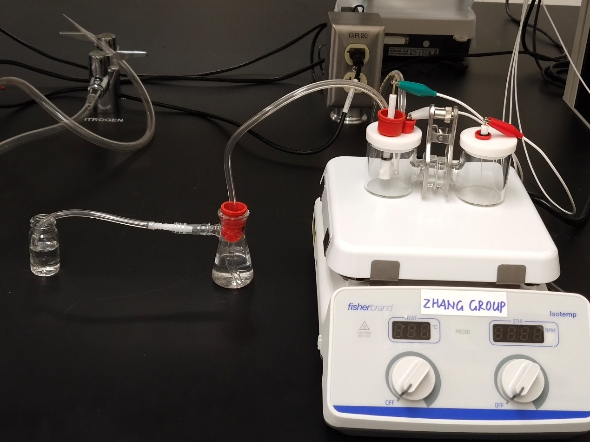

<section>
    <article id="2015-ml30">
        <div class="cell-image">
            <a href="image/activities/NRR.jpg" class="image thumb-big">
                
            </a>
        </div>
        <div class="cell-text-photo">
            <h3>Cation effect of Ionic Liquid on NRR and HER</h3>

            <p>
                While a lot of work has been done on design and synthesis of electrochemical catalyst to make
                the reactions to occur more easily and more selectively, there are also reports on the effect of various
                electrolytes for NH3 formation and H2 formation. The activity of electrochemical reactions is
                affected by the solvent and electrolyte ions as well as the substrate. At the electrode/electrolyte
                interface, such solution species construct the electric double layer (EDL), which governs the HER
                and NRR activity on Pt surfaces significantly. The adsorbed species is formed on electrode surfaces
                in electrolytic solutions containing ions that weakly interact with electrode surfaces. The stability
                of adsorbed species depends on the surface structure and on the electronic state of the substrate.
                And this is very important to understand the mechanism of the two reactions, Which could be
                quite helpful for the improvement of the efficiency of the two reactions. So the purpose of this intern
                mainly focus on the study of the cation effect of the electrolyte on HER and NRR in neutral
                environment.<br />
                In this intern, I set up the H-cell for NRR test in the lab, and primarily had a conclusion that BMIM and EMIM would inhibit HER. Further work is followed by the postdoc in the group.

                <!-- <li>
         Using CVD method to grow MoS2 on the substrates using the S powder and MoO3 powder.<br />
         - Cu mesh,Cu foam,CuNi foam, FeNi foam, CoNi foam are selected to sevre as susbtrates<br />
     <li>
         Pursuing high HER activity, which means low overpotential<br />
         - Among the substrates, CuNi foam shows the best performance of overpotential of 180mV<br />
     <li>
         Trying to find the role of substrates play in the catalysts<br />
         - The interface of transitional metal sulfides may have a promoting effect of the catalysts<br />
     -->
            </p>
        </div>
    </article>
